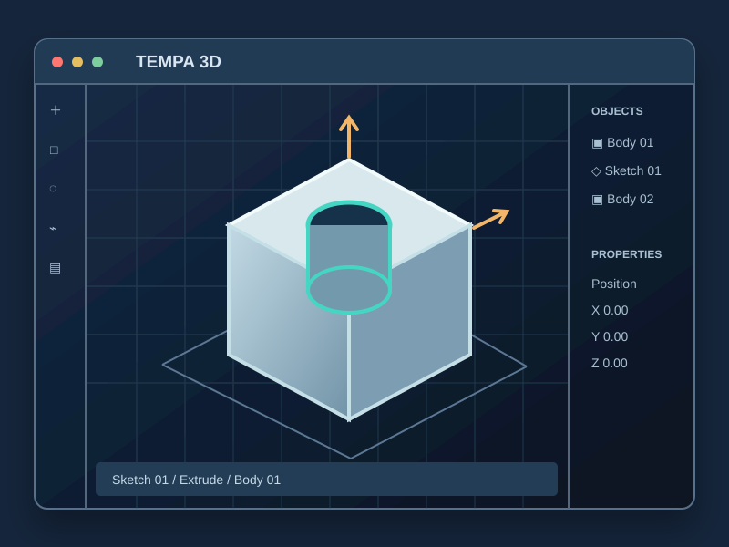
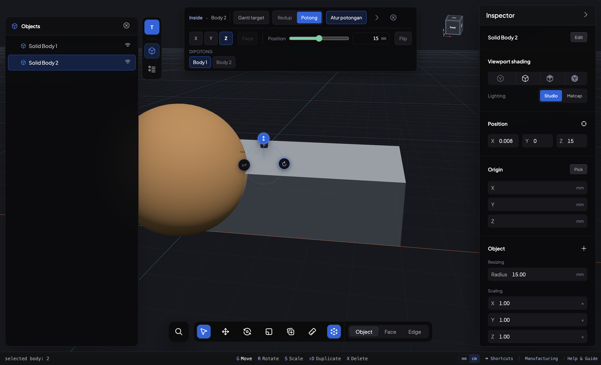

Personal project · desktop applicationProyek pribadi · aplikasi desktop
Tempa 3D
A CAD app I’m building for designing functional parts and preparing them for 3D printing.
Aplikasi CAD yang saya bangun untuk merancang komponen fungsional dan menyiapkannya untuk cetak 3D.
In development · macOS on Apple Silicon · no public download yet
Dalam pengembangan · macOS dengan Apple Silicon · belum tersedia untuk diunduh
Request access ↗ Minta akses ↗
About the projectTentang proyek ini
Tempa brings a 3D viewport, direct modeling tools, and an operation journal into one workspace. I’m working on how people select geometry, change a part on the model, and understand what happened after each edit.
Tempa menyatukan viewport 3D, alat pemodelan langsung, dan jurnal operasi dalam satu ruang kerja. Saya sedang mengembangkan cara pengguna memilih geometri, mengubah komponen langsung pada model, dan memahami hasil tiap pengeditan.
This is an internal build. I’m still testing its modeling workflows and release readiness, so there is no public app download or repository link. If you would like to see more, send me an access request by email.
Ini masih build internal. Saya masih menguji alur pemodelan dan kesiapan rilisnya, jadi belum ada unduhan aplikasi atau tautan repositori publik. Jika ingin melihat lebih lanjut, kirim permintaan akses lewat email.
